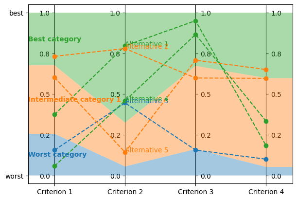
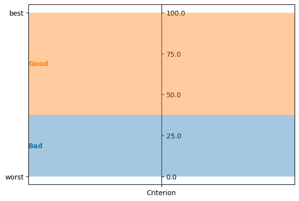
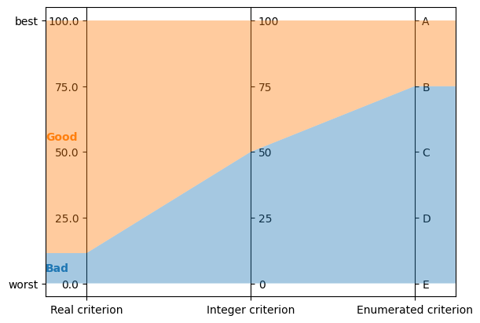
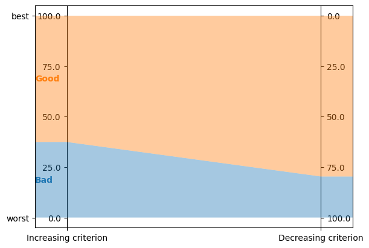
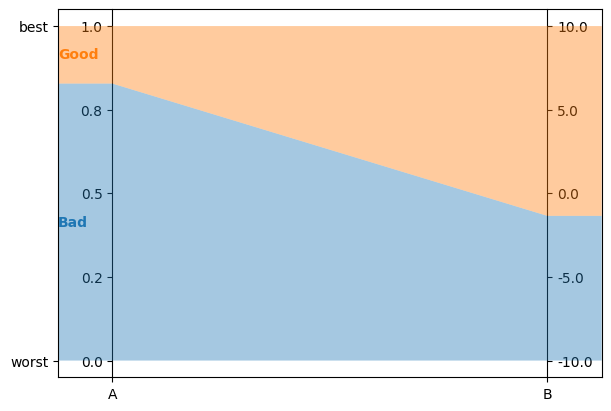
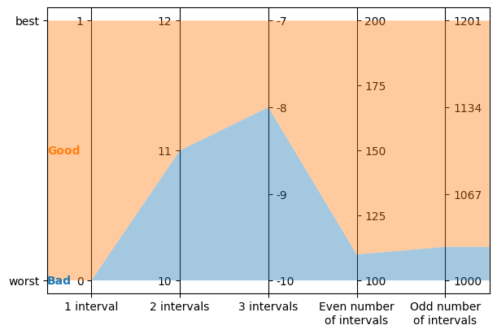

The Python API¶
This document builds up on our “Get Started” guide and our user guide, and introduces lincs’ Python API. This API is more flexible, albeit more complex, than the command-line interface you’ve been using so far.
If you’re a Jupyter user, you can download the notebook this document is based on.
Do it again, in Python¶
First, lets do exactly the same thing as in our “Get started” guide, but using the Python API.
from lincs import classification as lc
Generate a synthetic classification problem:
problem = lc.generate_problem(criteria_count=4, categories_count=3, random_seed=40)
The first difference with the command-line interface is the third argument to the call to generate_problem: it’s the pseudo-random seed optionally passed by the --random-seed option on the command line. All pseudo-random seeds are mandatory in the Python API, so that you have full control of reproducibility. If you don’t care about it, you can use random.randrange(2**30) to use pseudo-random pseudo-random seeds. (No typo here: the pseudo-random seeds are pseudo-random.)
Generated problems are returned as Python objects of class lincs.Problem. You can print them:
import sys
problem.dump(sys.stdout)
kind: classification-problem
format_version: 1
criteria:
- name: Criterion 1
value_type: real
preference_direction: increasing
min_value: 0
max_value: 1
- name: Criterion 2
value_type: real
preference_direction: increasing
min_value: 0
max_value: 1
- name: Criterion 3
value_type: real
preference_direction: increasing
min_value: 0
max_value: 1
- name: Criterion 4
value_type: real
preference_direction: increasing
min_value: 0
max_value: 1
ordered_categories:
- name: Worst category
- name: Intermediate category 1
- name: Best category
Description functions generate a list of strings:
print("\n".join(lc.describe_problem(problem)))
This a classification problem into 3 ordered categories named "Worst category", "Intermediate category 1" and "Best category".
The best category is "Best category" and the worst category is "Worst category".
There are 4 classification criteria (in no particular order).
Criterion "Criterion 1" takes real values between 0.0 and 1.0 included.
Higher values of "Criterion 1" are known to be better.
Criterion "Criterion 2" takes real values between 0.0 and 1.0 included.
Higher values of "Criterion 2" are known to be better.
Criterion "Criterion 3" takes real values between 0.0 and 1.0 included.
Higher values of "Criterion 3" are known to be better.
Criterion "Criterion 4" takes real values between 0.0 and 1.0 included.
Higher values of "Criterion 4" are known to be better.
Generate a synthetic MR-Sort classification model, again with an explicit pseudo-random seed:
model = lc.generate_mrsort_model(problem, random_seed=41)
model.dump(problem, sys.stdout)
kind: ncs-classification-model
format_version: 1
accepted_values:
- kind: thresholds
thresholds: [0.255905151, 0.676961303]
- kind: thresholds
thresholds: [0.0551739037, 0.324553937]
- kind: thresholds
thresholds: [0.162252158, 0.673279881]
- kind: thresholds
thresholds: [0.0526000932, 0.598555863]
sufficient_coalitions:
- &coalitions
kind: weights
criterion_weights: [0.147771254, 0.618687689, 0.406786472, 0.0960085914]
- *coalitions
Visualization functions interface with Matplotlib:
import matplotlib.pyplot as plt
axes = plt.subplots(1, 1, figsize=(6, 4), layout="constrained")[1]
lc.visualize_model(problem, model, [], axes)

Get the model’s description:
print("\n".join(lc.describe_model(problem, model)))
This is a MR-Sort (a.k.a. 1-Uc-NCS) model: an NCS model where the sufficient coalitions are specified using the same criterion weights for all boundaries.
The weights associated to each criterion are:
- Criterion "Criterion 1": 0.15
- Criterion "Criterion 2": 0.62
- Criterion "Criterion 3": 0.41
- Criterion "Criterion 4": 0.10
To get into an upper category, an alternative must be better than the following profiles on a set of criteria whose weights add up to at least 1:
- For category "Intermediate category 1": at least 0.26 on criterion "Criterion 1", at least 0.06 on criterion "Criterion 2", at least 0.16 on criterion "Criterion 3", and at least 0.05 on criterion "Criterion 4"
- For category "Best category": at least 0.68 on criterion "Criterion 1", at least 0.32 on criterion "Criterion 2", at least 0.67 on criterion "Criterion 3", and at least 0.60 on criterion "Criterion 4"
Generate a synthetic learning set (with an explicit pseudo-random seed):
learning_set = lc.generate_alternatives(problem, model, alternatives_count=1000, random_seed=42)
Dump it (in memory instead of on sys.stdout to print only the first few lines):
import io
f = io.StringIO()
learning_set.dump(problem, f)
print("\n".join(f.getvalue().splitlines()[:6] + ['...']))
name,"Criterion 1","Criterion 2","Criterion 3","Criterion 4",category
"Alternative 1",0.37454012,0.796543002,0.95071429,0.183434784,"Best category"
"Alternative 2",0.731993914,0.779690981,0.598658502,0.596850157,"Intermediate category 1"
"Alternative 3",0.156018645,0.445832759,0.15599452,0.0999749228,"Worst category"
"Alternative 4",0.0580836125,0.4592489,0.866176128,0.333708614,"Best category"
"Alternative 5",0.601114988,0.14286682,0.708072603,0.650888503,"Intermediate category 1"
...
Visualize it:
axes = plt.subplots(1, 1, figsize=(6, 4), layout="constrained")[1]
lc.visualize_model(problem, model, learning_set.alternatives[:5], axes)

Let’s now train a new model from this synthetic learning set.
The command-line interface of lincs learn classification-model accepts quite a few options.
Most of them set up the strategies used for the learning, as described further in our user guide.
When using the Python API, you have to create these strategies yourself:
learning_data = lc.LearnMrsortByWeightsProfilesBreed.LearningData(problem, learning_set, models_count=9, random_seed=43)
profiles_initialization_strategy = lc.InitializeProfilesForProbabilisticMaximalDiscriminationPowerPerCriterion(learning_data)
weights_optimization_strategy = lc.OptimizeWeightsUsingGlop(learning_data)
profiles_improvement_strategy = lc.ImproveProfilesWithAccuracyHeuristicOnCpu(learning_data)
breeding_strategy = lc.ReinitializeLeastAccurate(learning_data, profiles_initialization_strategy=profiles_initialization_strategy, count=4)
termination_strategy = lc.TerminateAtAccuracy(learning_data, target_accuracy=len(learning_set.alternatives))
Then create the learning itself:
learning = lc.LearnMrsortByWeightsProfilesBreed(
learning_data,
profiles_initialization_strategy,
weights_optimization_strategy,
profiles_improvement_strategy,
breeding_strategy,
termination_strategy,
)
And .perform it to create the learned Model object:
learned_model = learning.perform()
learned_model.dump(problem, sys.stdout)
kind: ncs-classification-model
format_version: 1
accepted_values:
- kind: thresholds
thresholds: [0.339874953, 0.421424538]
- kind: thresholds
thresholds: [0.0556534864, 0.326433569]
- kind: thresholds
thresholds: [0.162616938, 0.67343241]
- kind: thresholds
thresholds: [0.0878681168, 0.252649099]
sufficient_coalitions:
- &coalitions
kind: weights
criterion_weights: [0, 1.01327896e-06, 0.999998987, 0]
- *coalitions
Create a testing set and classify it, taking notes of the accuracy of the new model on that testing set:
testing_set = lc.generate_alternatives(problem, model, alternatives_count=3000, random_seed=44)
classification_result = lc.classify_alternatives(problem, learned_model, testing_set)
classification_result.changed, classification_result.unchanged
(4, 2996)
This covers what was done in our “Get started” guide. As you can see the Python API is more verbose, but for good reasons: it’s more powerful as you’ll see in the next section.
Do more, with the Python API¶
Create classification objects¶
You don’t have to use our pseudo-random generation functions; you can create Problem, Model, etc. instances yourself.
Create a Problem¶
problem = lc.Problem(
criteria=[
lc.Criterion("Physics grade", lc.Criterion.IntegerValues(lc.Criterion.PreferenceDirection.increasing, 0, 100)),
lc.Criterion("Literature grade", lc.Criterion.EnumeratedValues(["f", "e", "d", "c", "b", "a"])),
],
ordered_categories=[lc.Category("Failed"), lc.Category("Passed"), lc.Category("Congratulations")],
)
problem.dump(sys.stdout)
kind: classification-problem
format_version: 1
criteria:
- name: Physics grade
value_type: integer
preference_direction: increasing
min_value: 0
max_value: 100
- name: Literature grade
value_type: enumerated
ordered_values: [f, e, d, c, b, a]
ordered_categories:
- name: Failed
- name: Passed
- name: Congratulations
You can access all their attributes in code as well:
criterion = problem.criteria[0]
criterion.name
'Physics grade'
criterion.value_type, criterion.is_real, criterion.is_integer, criterion.is_enumerated
(liblincs.ValueType.integer, False, True, False)
values = criterion.integer_values
values.preference_direction, values.is_increasing, values.is_decreasing
(liblincs.PreferenceDirection.isotone, True, False)
values.min_value, values.max_value
(0, 100)
criterion = problem.criteria[1]
criterion.name
'Literature grade'
criterion.value_type, criterion.is_real, criterion.is_integer, criterion.is_enumerated
(liblincs.ValueType.enumerated, False, False, True)
values = criterion.enumerated_values
list(values.ordered_values)
['f', 'e', 'd', 'c', 'b', 'a']
values.get_value_rank(value="a")
5
Create a Model¶
model = lc.Model(
problem,
accepted_values=[
lc.AcceptedValues(lc.AcceptedValues.IntegerThresholds([50, 80])),
lc.AcceptedValues(lc.AcceptedValues.EnumeratedThresholds(["c", "a"])),
],
sufficient_coalitions=[
lc.SufficientCoalitions(lc.SufficientCoalitions.Weights([0.5, 0.5])),
lc.SufficientCoalitions(lc.SufficientCoalitions.Weights([0.5, 0.5])),
],
)
model.dump(problem, sys.stdout)
kind: ncs-classification-model
format_version: 1
accepted_values:
- kind: thresholds
thresholds: [50, 80]
- kind: thresholds
thresholds: [c, a]
sufficient_coalitions:
- &coalitions
kind: weights
criterion_weights: [0.5, 0.5]
- *coalitions
accepted = model.accepted_values[0]
accepted.value_type, accepted.is_real, accepted.is_integer, accepted.is_enumerated
(liblincs.ValueType.integer, False, True, False)
accepted.kind, accepted.is_thresholds
(liblincs.Kind.thresholds, True)
list(accepted.integer_thresholds.thresholds)
[50, 80]
accepted = model.accepted_values[1]
accepted.value_type, accepted.is_real, accepted.is_integer, accepted.is_enumerated
(liblincs.ValueType.enumerated, False, False, True)
accepted.kind, accepted.is_thresholds
(liblincs.Kind.thresholds, True)
list(accepted.enumerated_thresholds.thresholds)
['c', 'a']
sufficient = model.sufficient_coalitions[0]
sufficient.kind, sufficient.is_weights, sufficient.is_roots
(liblincs.Kind.weights, True, False)
list(sufficient.weights.criterion_weights)
[0.5, 0.5]
Create (classified) Alternatives¶
alternatives = lc.Alternatives(problem, [
lc.Alternative(
"Unclassified alternative",
[
lc.Performance(lc.Performance.Integer(50)),
lc.Performance(lc.Performance.Enumerated("c")),
],
None
),
lc.Alternative(
"Classified alternative",
[
lc.Performance(lc.Performance.Integer(90)),
lc.Performance(lc.Performance.Enumerated("a")),
],
2
),
])
alternative = alternatives.alternatives[0]
alternative.category_index is None
True
performance = alternative.profile[0]
performance.value_type, performance.is_real, performance.is_integer, performance.is_enumerated
(liblincs.ValueType.integer, False, True, False)
performance.integer.value
50
problem.ordered_categories[alternatives.alternatives[1].category_index].name
'Congratulations'
Clone classification objects¶
Just use copy.deepcopy:
import copy
copied_problem = copy.deepcopy(problem)
copied_model = copy.deepcopy(model)
copied_alternatives = copy.deepcopy(alternatives)
This is especially useful e.g. if you want to identify alternatives that are classified differently by two models, because lc.classify_alternatives mutates the alternatives: clone the Alternatives, classify the copy and iterate over the zip of both Alternatives, comparing their .category_index.
Serialize classification objects¶
In YAML and CSV like the command-line¶
(and the upcoming C++ API)
Classification objects have a .dump method, and their classes have a static .load method that accept file-like objects.
We’ve used them above to print classification objects to sys.stdout. Here is an example of how to use them with actual files:
with open("problem.yml", "w") as f:
problem.dump(f)
with open("model.yml", "w") as f:
model.dump(problem, f)
with open("alternatives.csv", "w") as f:
alternatives.dump(problem, f)
with open("problem.yml") as f:
problem = lc.Problem.load(f)
with open("model.yml") as f:
model = lc.Model.load(problem, f)
with open("alternatives.csv") as f:
alternatives = lc.Alternatives.load(problem, f)
And here with in-memory io objects:
f = io.StringIO()
problem.dump(f)
s = f.getvalue()
print(s)
kind: classification-problem
format_version: 1
criteria:
- name: Physics grade
value_type: integer
preference_direction: increasing
min_value: 0
max_value: 100
- name: Literature grade
value_type: enumerated
ordered_values: [f, e, d, c, b, a]
ordered_categories:
- name: Failed
- name: Passed
- name: Congratulations
f = io.StringIO(s)
problem = lc.Problem.load(f)
Using the Python-specific pickle module¶
Classification objects simply support pickling and unpickling. We recommend using the YAML and CSV formats whenever possible because they are not tied to the Python language (or the lincs library for that matter).
import pickle
pickle.loads(pickle.dumps(problem)).dump(sys.stdout)
kind: classification-problem
format_version: 1
criteria:
- name: Physics grade
value_type: integer
preference_direction: increasing
min_value: 0
max_value: 100
- name: Literature grade
value_type: enumerated
ordered_values: [f, e, d, c, b, a]
ordered_categories:
- name: Failed
- name: Passed
- name: Congratulations
Note however that learning objects (e.g. instances of LearnMrsortByWeightsProfilesBreed) are not picklable.
Customize the model visualization¶
We’ve decided to not implement any customization for the visualizations produced by lincs.classification.visualize_model (and thus lincs visualize classification-model) because this would make it less robust and increase its complexity beyond the scope of lincs.
However, lincs.classification.visualize_model is written in Python, using the Python API described in this guide. This means that you can get inspiration from its source code (i.e. copy-paste it) to produce custom visualizations for your needs.
Be aware that our implementation supports a few edge cases, so it might be a bit more complex than what you actually need:
problems and models with a single criterion are visualized in a sensible way
problem = lc.Problem([lc.Criterion("Criterion", lc.Criterion.RealValues(lc.Criterion.PreferenceDirection.increasing, 0, 100))], [lc.Category("Bad"), lc.Category("Good")])
model = lc.generate_mrsort_model(problem, 42)
axes = plt.subplots(1, 1, figsize=(6, 4), layout="constrained")[1]
lc.visualize_model(problem, model, [], axes)

all value types (real, integer and enumerated) are visualized on vertical axes
problem = lc.Problem(
[
lc.Criterion("Real criterion", lc.Criterion.RealValues(lc.Criterion.PreferenceDirection.increasing, 0, 100)),
lc.Criterion("Integer criterion", lc.Criterion.IntegerValues(lc.Criterion.PreferenceDirection.increasing, 0, 100)),
lc.Criterion("Enumerated criterion", lc.Criterion.EnumeratedValues(["E", "D", "C", "B", "A"])),
],
[lc.Category("Bad"), lc.Category("Good")]
)
model = lc.generate_mrsort_model(problem, 43)
axes = plt.subplots(1, 1, figsize=(6, 4), layout="constrained")[1]
lc.visualize_model(problem, model, [], axes)

increasing and decreasing criteria are visualized with axes going up or down
problem = lc.Problem(
[
lc.Criterion("Increasing criterion", lc.Criterion.RealValues(lc.Criterion.PreferenceDirection.increasing, 0, 100)),
lc.Criterion("Decreasing criterion", lc.Criterion.RealValues(lc.Criterion.PreferenceDirection.decreasing, 0, 100)),
],
[lc.Category("Bad"), lc.Category("Good")]
)
model = lc.generate_mrsort_model(problem, 42)
axes = plt.subplots(1, 1, figsize=(6, 4), layout="constrained")[1]
lc.visualize_model(problem, model, [], axes)

any min and max values are aligned horizontally at the top and bottom of vertical axes
problem = lc.Problem(
[
lc.Criterion("A", lc.Criterion.RealValues(lc.Criterion.PreferenceDirection.increasing, 0, 1)),
lc.Criterion("B", lc.Criterion.RealValues(lc.Criterion.PreferenceDirection.increasing, -10, 10)),
],
[lc.Category("Bad"), lc.Category("Good")]
)
model = lc.generate_mrsort_model(problem, 44)
axes = plt.subplots(1, 1, figsize=(6, 4), layout="constrained")[1]
lc.visualize_model(problem, model, [], axes)

labels for integer criteria with any number of intervals
problem = lc.Problem(
[
lc.Criterion("1 interval", lc.Criterion.IntegerValues(lc.Criterion.PreferenceDirection.increasing, 0, 1)),
lc.Criterion("2 intervals", lc.Criterion.IntegerValues(lc.Criterion.PreferenceDirection.increasing, 10, 12)),
lc.Criterion("3 intervals", lc.Criterion.IntegerValues(lc.Criterion.PreferenceDirection.increasing, -10, -7)),
lc.Criterion("Even number\nof intervals", lc.Criterion.IntegerValues(lc.Criterion.PreferenceDirection.increasing, 100, 200)),
lc.Criterion("Odd number\nof intervals", lc.Criterion.IntegerValues(lc.Criterion.PreferenceDirection.increasing, 1000, 1201)),
],
[lc.Category("Bad"), lc.Category("Good")]
)
model = lc.generate_mrsort_model(problem, 43)
axes = plt.subplots(1, 1, figsize=(6, 4), layout="constrained")[1]
lc.visualize_model(problem, model, [], axes)

Create your own learning strategies¶
The “Weights, profiles, breed” learning approach uses strategies for each of its steps. lincs provides effective strategies as you’ve seen in the first part of this guide. You can also define your own strategies, to experiment with new ways to learn.
Let’s create a problem and learning set for this section:
problem = lc.Problem(
[
lc.Criterion("Criterion 1", lc.Criterion.RealValues(lc.Criterion.PreferenceDirection.decreasing, 0, 10)),
lc.Criterion("Criterion 2", lc.Criterion.IntegerValues(lc.Criterion.PreferenceDirection.increasing, 0, 100)),
lc.Criterion("Criterion 3", lc.Criterion.EnumeratedValues(["F", "E", "D", "C", "B", "A"])),
],
[lc.Category("Bad"), lc.Category("Medium"), lc.Category("Good")],
)
learning_set = lc.generate_alternatives(problem, lc.generate_mrsort_model(problem, random_seed=42), alternatives_count=1000, random_seed=43)
LearningData¶
First, let’s get more familiar with the LearningData. You’ve seen it briefly in the first part of this guide but its purpose might still be quite obscure at this point.
learning_data = lc.LearnMrsortByWeightsProfilesBreed.LearningData(problem, learning_set, models_count=9, random_seed=43)
This object is shared by all strategies. They communicate by changing it, using side effects. It’s the state of the WPB algorithm. It contains two families of attributes.
Input data¶
The first family of attributes is about the problem and learning set. These attributes never change. First, the counts:
(learning_data.criteria_count, learning_data.categories_count, learning_data.boundaries_count, learning_data.alternatives_count)
(3, 3, 2, 1000)
The learning set is pre-processed in the LearningData so that the WPB algorithm doesn’t have to manipulate the different type of criterion values. In the LearningData, we keep only the ranks of the performances of each alternative in the learning set. The learning set is also destructured into a few arrays. Here are the attributes that describe this pre-processed learning set:
The number of distinct values actually seen for each criterion (including the min and max values for numerical criteria):
list(learning_data.values_counts) # Indexed by [criterion_index]
[1002, 101, 6]
We see that the learning data knows 1002 values for the real-valued criterion. This is usual as it’s rare for two floating point values to be exactly equal, so the 1000 alternatives have distinct values, and the min and max are two more values. The learning data contains 101 values for the integer-valued criterion, meaning that the alternatives in the learning set do actually cover the whole set of possible values. And similarly, 6 values for the enumerated criterion.
For each criterion, the ranks of the performance of each alternative:
[list(v)[:10] + ['...'] for v in learning_data.performance_ranks] # Indexed by [criterion_index][alternative_index]
[[883, 900, 753, 216, 365, 410, 302, 852, 738, 45, '...'],
[50, 13, 17, 86, 4, 2, 25, 81, 47, 87, '...'],
[3, 0, 1, 0, 3, 3, 2, 0, 0, 3, '...']]
The assignment of each alternative, i.e. the index of its category:
list(learning_data.assignments)[:10] + ['...'] # Indexed by [alternative_index]
[2, 2, 2, 0, 1, 1, 1, 2, 2, 0, '...']
All these attributes are iterable and allow random access through an integer index. They do not support splicing.
learning_data.assignments[0]
2
In-progress data¶
The second family of attributes is about the WPB algorithm itself.
The WPB approach operates on several “in progress” models. Their number is constant:
learning_data.models_count
9
Each model comes with a uniform random bits generator (URBG for short):
[str(urbg)[:43] + '>' for urbg in learning_data.urbgs] # Indexed by [model_index]
['<liblincs.UniformRandomBitsGenerator object>',
'<liblincs.UniformRandomBitsGenerator object>',
'<liblincs.UniformRandomBitsGenerator object>',
'<liblincs.UniformRandomBitsGenerator object>',
'<liblincs.UniformRandomBitsGenerator object>',
'<liblincs.UniformRandomBitsGenerator object>',
'<liblincs.UniformRandomBitsGenerator object>',
'<liblincs.UniformRandomBitsGenerator object>',
'<liblincs.UniformRandomBitsGenerator object>']
This lets heuristic strategies operate in parallel on models and still produce deterministic results. URBGs are callable to get the next pseudo-random integer:
[r() for r in learning_data.urbgs]
[494155588,
870190228,
2450414687,
641676058,
661088198,
363471047,
1448606581,
1348129397,
2542538607]
The WPB learning approach is iterative, and the iteration_index is stored in the learning data. It starts at zero and tells you the current iteration:
learning_data.iteration_index
0
The remaining attributes are modified at each iteration, and start uninitialized. For this presentation, we’ll first run one iteration of WPB so that their values make sense.
learning_data = lc.LearnMrsortByWeightsProfilesBreed.LearningData(problem, learning_set, models_count=9, random_seed=43)
profiles_initialization_strategy = lc.InitializeProfilesForProbabilisticMaximalDiscriminationPowerPerCriterion(learning_data)
weights_optimization_strategy = lc.OptimizeWeightsUsingGlop(learning_data)
profiles_improvement_strategy = lc.ImproveProfilesWithAccuracyHeuristicOnCpu(learning_data)
breeding_strategy = lc.ReinitializeLeastAccurate(learning_data, profiles_initialization_strategy=profiles_initialization_strategy, count=4)
termination_strategy = lc.TerminateAfterIterations(learning_data, max_iterations_count=1)
lc.LearnMrsortByWeightsProfilesBreed(
learning_data,
profiles_initialization_strategy,
weights_optimization_strategy,
profiles_improvement_strategy,
breeding_strategy,
termination_strategy,
).perform()
assert(learning_data.iteration_index == 0)
Its model_indexes contains indexes of models in increasing order of accuracy.
list(learning_data.model_indexes)
[1, 5, 4, 8, 3, 6, 2, 0, 7]
Its accuracies attribute holds the accuracy of each model. They are stored as the count of correctly-classified alternatives, between 0 and alternatives_count included:
list(learning_data.accuracies) # Indexed by model_index
[728, 593, 725, 671, 637, 609, 676, 833, 640]
If you iterate the accuracies in the order of model_indexes, they are sorted:
[learning_data.accuracies[index] for index in learning_data.model_indexes] == sorted(learning_data.accuracies)
True
Its profile_ranks hold, for each in-progress model, boundary, and criterion, the rank of the boundary’s performance, on the same scale as the performance_ranks attributes.
[[list(vv) for vv in v] for v in learning_data.profile_ranks] # Indexed by [model_index][boundary_index][criterion_index]
[[[124, 9, 0], [633, 9, 3]],
[[492, 8, 1], [965, 8, 4]],
[[268, 15, 0], [506, 54, 3]],
[[230, 8, 1], [272, 26, 4]],
[[201, 1, 1], [201, 2, 3]],
[[86, 64, 0], [86, 99, 0]],
[[223, 60, 2], [310, 80, 5]],
[[235, 20, 2], [595, 20, 3]],
[[261, 52, 0], [262, 52, 3]]]
Its weights attribute holds the MR-Sort weight of each criterion in each in-progress model.
[list(v) for v in learning_data.weights] # Indexed by [model_index][criterion_index]
[[1.0132789611816406e-06, 0.9999989867210388, 1.0132789611816406e-06],
[0.9999989867210388, 0.9999989867210388, 1.0132789611816406e-06],
[1.0, 0.0, 0.9999989867210388],
[0.5000004768371582, 0.4999994933605194, 0.4999994933605194],
[1.0132789611816406e-06, 0.9999989867210388, 0.0],
[0.9999989867210388, 0.0, 1.0132789611816406e-06],
[1.0, 0.0, 0.0],
[1.0, 0.9999989867210388, 1.0132789611816406e-06],
[0.9999989867210388, 0.0, 0.9999989867210388]]
Finally, LearningData has two methods about the best model so far: get_best_model and get_best_accuracy, which respectively return the best Model so far and its accuracy.
learning_data.get_best_model().dump(problem, sys.stdout)
kind: ncs-classification-model
format_version: 1
accepted_values:
- kind: thresholds
thresholds: [7.7909708, 4.06594753]
- kind: thresholds
thresholds: [20, 20]
- kind: thresholds
thresholds: [D, C]
sufficient_coalitions:
- &coalitions
kind: weights
criterion_weights: [1, 0.999998987, 1.01327896e-06]
- *coalitions
learning_data.get_best_accuracy()
833
Observer strategies¶
With this hopefully better understanding of LearningData, let’s write our own Observer strategy.
It’s arguably the simplest to starts with, because it’s not expected to change the LearningData, but only observe it at some key points of the learning.
To start as simple as possible, lets reproduce the behavior of the --...-verbose flag on the command line, by creating an observer that just prints the best accuracy at each step.
Observer strategies must define two methods to be called by the learning algorithm: after_iteration, to be called at the end of each iteration, after the breeding of models is done, and before_return, to be called just before the final model is returned.
class VerboseObserver(lc.LearnMrsortByWeightsProfilesBreed.Observer):
def __init__(self, learning_data):
super().__init__()
self.learning_data = learning_data
def after_iteration(self):
print(f"Best accuracy (after {self.learning_data.iteration_index + 1} iterations): {self.learning_data.get_best_accuracy()}")
def before_return(self):
print(f"Final accuracy (after {self.learning_data.iteration_index + 1} iterations): {self.learning_data.get_best_accuracy()}")
We can now pass it to a learning and perform that learning to observe its effects:
profiles_initialization_strategy = lc.InitializeProfilesForProbabilisticMaximalDiscriminationPowerPerCriterion(learning_data)
weights_optimization_strategy = lc.OptimizeWeightsUsingGlop(learning_data)
profiles_improvement_strategy = lc.ImproveProfilesWithAccuracyHeuristicOnCpu(learning_data)
breeding_strategy = lc.ReinitializeLeastAccurate(learning_data, profiles_initialization_strategy=profiles_initialization_strategy, count=4)
termination_strategy = lc.TerminateAtAccuracy(learning_data, target_accuracy=len(learning_set.alternatives))
observer = VerboseObserver(learning_data)
learned_model = lc.LearnMrsortByWeightsProfilesBreed(
learning_data,
profiles_initialization_strategy,
weights_optimization_strategy,
profiles_improvement_strategy,
breeding_strategy,
termination_strategy,
[observer],
).perform()
Best accuracy (after 1 iterations): 938
Best accuracy (after 2 iterations): 992
Best accuracy (after 3 iterations): 997
Best accuracy (after 4 iterations): 997
Best accuracy (after 5 iterations): 997
Best accuracy (after 6 iterations): 997
Best accuracy (after 7 iterations): 997
Best accuracy (after 8 iterations): 999
Final accuracy (after 9 iterations): 1000
Now let’s do something slightly more complicated: our goal for IntermediatesObserver is to keep track of the best model so far at different times during the learning. Specifically, we want to keep the models at iterations 1, 2, 4, 8, etc..
import math
class IntermediatesObserver(lc.LearnMrsortByWeightsProfilesBreed.Observer):
def __init__(self, problem, learning_data):
super().__init__()
self.problem = problem
self.learning_data = learning_data
self.intermediate_models = []
def after_iteration(self):
if math.log2(self.learning_data.iteration_index + 1).is_integer():
self.intermediate_models.append(self.learning_data.get_best_model())
def before_return(self):
pass
learning_data = lc.LearnMrsortByWeightsProfilesBreed.LearningData(problem, learning_set, models_count=9, random_seed=43) # Do *not* reuse the same `LearningData` for several learnings
profiles_initialization_strategy = lc.InitializeProfilesForProbabilisticMaximalDiscriminationPowerPerCriterion(learning_data)
weights_optimization_strategy = lc.OptimizeWeightsUsingGlop(learning_data)
profiles_improvement_strategy = lc.ImproveProfilesWithAccuracyHeuristicOnCpu(learning_data)
breeding_strategy = lc.ReinitializeLeastAccurate(learning_data, profiles_initialization_strategy=profiles_initialization_strategy, count=4)
termination_strategy = lc.TerminateAtAccuracy(learning_data, target_accuracy=len(learning_set.alternatives))
observer = IntermediatesObserver(problem, learning_data)
final_model = lc.LearnMrsortByWeightsProfilesBreed(
learning_data,
profiles_initialization_strategy,
weights_optimization_strategy,
profiles_improvement_strategy,
breeding_strategy,
termination_strategy,
[observer],
).perform()
for model in observer.intermediate_models:
model.dump(problem, sys.stdout)
final_model.dump(problem, sys.stdout)
kind: ncs-classification-model
format_version: 1
accepted_values:
- kind: thresholds
thresholds: [7.7909708, 4.06594753]
- kind: thresholds
thresholds: [20, 20]
- kind: thresholds
thresholds: [D, C]
sufficient_coalitions:
- &coalitions
kind: weights
criterion_weights: [1, 0.999998987, 1.01327896e-06]
- *coalitions
kind: ncs-classification-model
format_version: 1
accepted_values:
- kind: thresholds
thresholds: [7.95116329, 3.89878368]
- kind: thresholds
thresholds: [0, 21]
- kind: thresholds
thresholds: [C, B]
sufficient_coalitions:
- &coalitions
kind: weights
criterion_weights: [1, 0, 1]
- *coalitions
kind: ncs-classification-model
format_version: 1
accepted_values:
- kind: thresholds
thresholds: [7.96338844, 3.82566905]
- kind: thresholds
thresholds: [73, 84]
- kind: thresholds
thresholds: [B, B]
sufficient_coalitions:
- &coalitions
kind: weights
criterion_weights: [1, 0, 1]
- *coalitions
kind: ncs-classification-model
format_version: 1
accepted_values:
- kind: thresholds
thresholds: [7.96338844, 3.74707603]
- kind: thresholds
thresholds: [94, 99]
- kind: thresholds
thresholds: [B, B]
sufficient_coalitions:
- &coalitions
kind: weights
criterion_weights: [1, 0, 1]
- *coalitions
kind: ncs-classification-model
format_version: 1
accepted_values:
- kind: thresholds
thresholds: [7.95116329, 3.74707603]
- kind: thresholds
thresholds: [94, 99]
- kind: thresholds
thresholds: [B, B]
sufficient_coalitions:
- &coalitions
kind: weights
criterion_weights: [1, 0, 1]
- *coalitions
Other strategies¶
Coming up with new interesting strategies is far from easy, so in this guide, we’ll just describe the interfaces that the WPB approach expects from these strategies, and not even try to do anything intelligent. That part is up to you!
Each strategy must inherit from a given abstract base class, as you can see below. Each strategy must override a given method as is detailed below.
Profiles initialization strategies must implement .initialize_profiles(model_indexes_begin, model_indexes_end), that should initialize all profile_ranks for models at indexes in [learning_data.model_index[i] for i in range(model_indexes_begin, model_indexes_end)].
class SillyProfilesInitializationStrategy(lc.LearnMrsortByWeightsProfilesBreed.ProfilesInitializationStrategy):
def __init__(self, learning_data):
super().__init__()
self.learning_data = learning_data
def initialize_profiles(self, model_indexes_begin, model_indexes_end):
print("initialize_profiles", model_indexes_begin, model_indexes_end, file=sys.stderr)
for model_index_index in range(model_indexes_begin, model_indexes_end):
model_index = learning_data.model_indexes[model_index_index]
for boundary_index in range(self.learning_data.boundaries_count):
for criterion_index in range(self.learning_data.criteria_count):
self.learning_data.profile_ranks[model_index][boundary_index][criterion_index] = 0
Weights optimization strategies must implement .optimize_weights(model_indexes_begin, model_indexes_end), that should optimize all weights for models at indexes in [learning_data.model_index[i] for i in range(model_indexes_begin, model_indexes_end)].
class SillyWeightsOptimizationStrategy(lc.LearnMrsortByWeightsProfilesBreed.WeightsOptimizationStrategy):
def __init__(self, learning_data):
super().__init__()
self.learning_data = learning_data
def optimize_weights(self, model_indexes_begin, model_indexes_end):
print("optimize_weights", file=sys.stderr)
for model_index_index in range(model_indexes_begin, model_indexes_end):
model_index = learning_data.model_indexes[model_index_index]
for criterion_index in range(self.learning_data.criteria_count):
self.learning_data.weights[model_index][criterion_index] = 1.1 / self.learning_data.criteria_count
Profiles improvement strategies must implement .improve_profiles(model_indexes_begin, model_indexes_end), that should improve profile_ranks for models at indexes in [learning_data.model_index[i] for i in range(model_indexes_begin, model_indexes_end)].
class SillyProfilesImprovementStrategy(lc.LearnMrsortByWeightsProfilesBreed.ProfilesImprovementStrategy):
def __init__(self, learning_data):
super().__init__()
self.learning_data = learning_data
def improve_profiles(self, model_indexes_begin, model_indexes_end):
print("improve_profiles", file=sys.stderr)
for model_index_index in range(model_indexes_begin, model_indexes_end):
model_index = learning_data.model_indexes[model_index_index]
for boundary_index in range(self.learning_data.boundaries_count):
for criterion_index in range(self.learning_data.criteria_count):
rank = (boundary_index + 1) * (self.learning_data.values_counts[criterion_index] // (self.learning_data.boundaries_count + 1))
self.learning_data.profile_ranks[model_index][boundary_index][criterion_index] = rank
Breeding strategies must implement .breed(), that should breed all models.
class SillyBreedingStrategy(lc.LearnMrsortByWeightsProfilesBreed.BreedingStrategy):
def __init__(self, learning_data):
super().__init__()
self.learning_data = learning_data
def breed(self):
print("breed", file=sys.stderr)
Termination strategies must implement .terminate(), that should return True to terminate the learning.
class SillyTerminationStrategy(lc.LearnMrsortByWeightsProfilesBreed.TerminationStrategy):
def __init__(self, learning_data):
super().__init__()
self.learning_data = learning_data
def terminate(self):
print("terminate", file=sys.stderr)
return self.learning_data.iteration_index == 3
problem = lc.Problem(
[
lc.Criterion("Criterion 1", lc.Criterion.RealValues(lc.Criterion.PreferenceDirection.decreasing, 0, 10)),
lc.Criterion("Criterion 2", lc.Criterion.IntegerValues(lc.Criterion.PreferenceDirection.increasing, 0, 100)),
lc.Criterion("Criterion 3", lc.Criterion.EnumeratedValues(["F", "E", "D", "C", "B", "A"])),
],
[lc.Category("Bad"), lc.Category("Medium"), lc.Category("Good")],
)
learning_set = lc.generate_alternatives(problem, lc.generate_mrsort_model(problem, random_seed=42), alternatives_count=1000, random_seed=43)
learning_data = lc.LearnMrsortByWeightsProfilesBreed.LearningData(problem, learning_set, models_count=9, random_seed=43)
profiles_initialization_strategy = SillyProfilesInitializationStrategy(learning_data)
weights_optimization_strategy = SillyWeightsOptimizationStrategy(learning_data)
profiles_improvement_strategy = SillyProfilesImprovementStrategy(learning_data)
breeding_strategy = SillyBreedingStrategy(learning_data)
termination_strategy = SillyTerminationStrategy(learning_data)
Here are the logs produced by these silly strategies during the learning:
learned_model = lc.LearnMrsortByWeightsProfilesBreed(
learning_data,
profiles_initialization_strategy,
weights_optimization_strategy,
profiles_improvement_strategy,
breeding_strategy,
termination_strategy,
).perform()
initialize_profiles 0 9
optimize_weights
improve_profiles
terminate
breed
optimize_weights
improve_profiles
terminate
breed
optimize_weights
improve_profiles
terminate
breed
optimize_weights
improve_profiles
terminate
And here is the silly model they produce:
learned_model.dump(problem, sys.stdout)
kind: ncs-classification-model
format_version: 1
accepted_values:
- kind: thresholds
thresholds: [6.94936371, 3.24692106]
- kind: thresholds
thresholds: [33, 66]
- kind: thresholds
thresholds: [D, B]
sufficient_coalitions:
- &coalitions
kind: weights
criterion_weights: [0.366666675, 0.366666675, 0.366666675]
- *coalitions